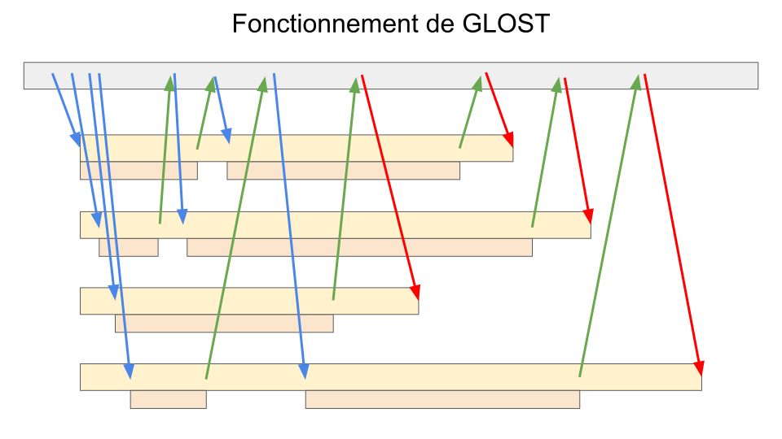

Le Greedy Launcher Of Small Tasks, ou GLOST#
Le Greedy Launcher Of Small Tasks, ou GLOST, fonctionne un peu comme GNU Parallel, mais avec quelques différences :
Fonctionne qu’avec des calculs séquentiels (un processeur par cas)
L’ordonnancement des processus se fait via MPI avec une architecture de type gestionnaire-travailleur sur un ou plusieurs noeuds de calcul
Le gestionnaire envoie à chaque travailleur un cas à exécuter
Le travailleur signale au gestionnaire quand le travail est complété
Le gestionnaire informe les travailleurs lorsqu’il n’y a plus de cas (pour quitter)

On doit donc définir une ligne de commande par cas de calcul :
Toutes les lignes de commande sont listées dans un même fichier
Les sous-commandes peuvent être séparées par des opérateurs
&&. Par exemple :
echo -n 'Bonjour ' && echo le monde
Exercice - Liste de cas Blastn avec GLOST#
Générez la liste des cas dans le fichier $SCRATCH/cas-blastn.txt :
cat scripts/blastn-cas.sh
bash scripts/blastn-cas.sh
less $SCRATCH/cas-blastn.txt
wc -l $SCRATCH/cas-blastn.txt
Lancez une tâche de 4 processeurs utilisant GLOST pour tester les \(8*4*10\) combinaisons de paramètres :
cat scripts/blastn-glost.sh
sbatch scripts/blastn-glost.sh
squeue -u $USER
Allez voir les processus en exécution :
ssh <nom_noeud> # srun --jobid <No_Tache> --pty <commande>
top -u $USER # q pour quitter
exit
Listez les résultats dans le dossier $SCRATCH/res_glost
ls -l $SCRATCH/res_glost
META-Farm - Le meilleur de GNU Parallel et GLOST#
META-Farm est un autre outil très puissant qui reprend l’utilisation d’un fichier de cas à calculer.
Alors que GLOST utilise une tâche parallèle MPI pour effectuer des calculs séquentiels, META-Farm utilise uniquement des tâches séquentielles pour effectuer zéro, un ou plusieurs calculs :
le mode SIMPLE implique un et un seul calcul par tâche et
le mode META permet de zéro à plusieurs calculs, selon les cas restants.
Chaque tâche consulte la liste des cas et prend le prochain cas disponible. Alors que le mode SIMPLE n’en prend qu’un seul, le mode META peut en prendre plusieurs. Une tâche se termine donc lorsqu’elle atteint sa limite de temps ou lorsqu’il ne reste plus de cas à calculer. Lorsque des cas ont échoué, il est possible de relancer le groupe de cas avec les cas restants.

Pour utiliser META-Farm, il faut tout d’abord créer un groupe de cas dans un nouveau dossier de travail :
module load meta-farm/1.0.2
farm_init.run aligner-ADxKR
cd aligner-ADxKR
ls
Le fichier table.dat peut contenir une liste de combinaisons
de paramètres ou bien une liste de commandes.
La liste de commandes pour GLOST peut être recyclée :
cp $SCRATCH/cas-blastn.txt table.dat
sed -i 's/_glost/_meta/g' table.dat
less table.dat
Pendant une tâche, chaque cas sera traité individuellement par le
script single_case.sh
et $COMM est la commande en cours.
nano single_case.sh
#mkdir -p RUN$ID
cd ../donnees # Aller dans le bon dossier
# ...
cd - # Revenir où nous étions
Pour nos très courts cas de calcul, il faut réduire la variable
dt_failed à 0 seconde :
nano config.h
dt_failed=0
Le script de tâche doit s’appeler
job_script.sh :
cp ../scripts/blastn-meta.sh job_script.sh
less job_script.sh
Et la soumission se fait via la commande submit.run :
submit.run 4
Où 4 est le nombre de tâches Slurm.
Points à retenir#
GLOST pour des calculs séquentiels seulement
# commande1a && commande1b > fichier1.txt
# commande2a && commande2b > fichier2.txt
srun glost_launch liste_commandes.txt